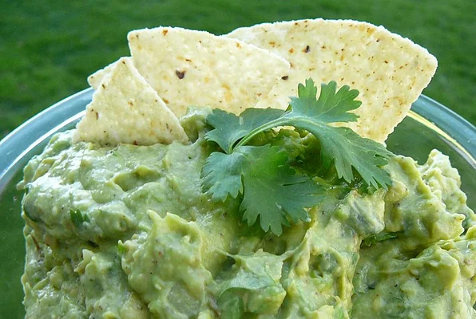

Guacamole

Delicious Bowl of fresh Guacamole
This guacamole recipe is very easy and
quick to make while also being very delicious
and healthy. With only a few ingredients and about
10 minutes you can make a dip that is better than what
you will find at most restaurants. The spice level can
be adjusted for your preferences, but I think it's much
better with
the fresh crunch of fresh jalapeno peppers. Enjoy!
Ingredients
- 4 large ripe Avocados
- 1 bunch fresh cilantro
- 1 tsp garlic salt
- 1 diced jalapeno pepper
- 2 limes
Steps
- Peel and pit the avocados, place fruit in mixing bowl
- Chop 2/3 cup of cilantro and to bowl
- Add the garlic salt to bowl
- Remove the seeds from Jalapeno and dice, add to bowl
- Add in juice of the two limes
- With a fork, mash and incorporate mixture
- Use as a dip with your favorite tortilla chips, enjoy!